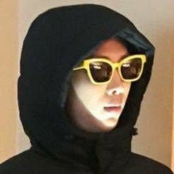
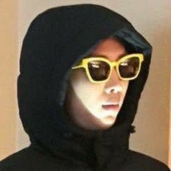

Manos do Bitiéssi
- Park Ji-min
 Jeon Jung-Kook
Kim Tae-hyung
Min Yoon-gi
Jung Hoseok
Jeon Jung-Kook
Kim Tae-hyung
Min Yoon-gi
Jung Hoseok
 Kim Nam-joon
 Kim Seok-jin
Kim Nam-joon
 Kim Seok-jin
Características de Jimin
- -> É um cantor;
- -> Integrante de um grupo musical;
- -> O grupo musical se chama BTS (Bangtan Boys).